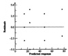
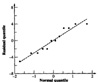
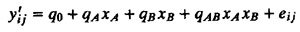
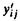
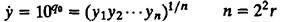
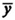

| Previous | Table of Contents | Next |
Thus, the techniques for verifying the assumptions are also the same as those discussed earlier for regression in Section 14.7. The assumptions, which can be visually tested, and the corresponding tests are as follows:
The following example illustrates the application of these tests.
Example 18.7 Consider the memory-cache study of Example 18.1. A plot of the residuals versus predicted responses is shown in Figure 18.1. The residuals are an order of magnitude smaller than the responses, and there does not appear to be any definite trend in the mean or spread of the residuals.

FIGURE 18.1 Plot of residuals versus predicted response for the memory-cache study.
FIGURE 18.2 Normal quantile-quantile plot for residuals of the memory-cache study.A normal quantile-quantile plot of the residuals is presented in Figure 18.2. Again, the residuals appear to be approximately normally distributed. Thus, the model appears to be valid for this case.
In the analysis of 22r experiments, the following additive model was assumed:
yij = q0 + qAxA + qBxB + qABxAxB + eij
This model assumes that the effect of the factors, their interactions, and the errors are additive. Before using the model, the analyst must validate this assumption by carefully considering whether the effects are in fact additive. In many cases, this assumption is not valid. The most common example is that of performance of processors on different workloads. In this case, there are two factors: processors and workloads. If there are only two processors and two workloads, we can use a 22r design. Suppose the measured response yij represents the time required to execute a workload of wj instructions on a processor capable of executing vi instructions per second. Then, if there are no errors or interactions, we know that the time would be
yij = viwj
The effects of the two factors are not additive; they are multiplicative. In this case, if we take a logarithm of both sides, we get an additive model:
log(yij) = log(vi) + log(wj)
Therefore, this is the correct model to use. In other words, we need to transform the measured responses to their logarithm and then use an additive model of the form

Here,  = log(yij) represents the transformed response. After the analysis, we can take an antilog of the additive effects qA, qB, and qAB to produce multiplicative effects uA = 10qA, uB = 10qB, and uAB = 10qAB.
The uA so obtained would represent the ratio of the MIPS rating of the two processors. Similarly, uB represents the ratio of the size of the two workloads. The antilog of additive mean q0 produces the geometric mean of the responses:

The following example illustrates the application of multiplicative models.
| TABLE 18.3 Analysis Using the Additive Model | |||||
|---|---|---|---|---|---|
| I | A | B | AB | y | Mean |
| 1 | –1 | –1 | 1 | (85.10, 79.50, 147.90) | 104.170 |
| 1 | 1 | –1 | –1 | (0.891, 1.047, 1.072) | 1.003 |
| 1 | –1 | 1 | –1 | (0.955, 0.933, 1.122) | 1.003 |
| 1 | 1 | 1 | 1 | (0.0148, 0.0126, 0.0118) | 0.013 |
| 106.19 | –104.15 | –104.15 | 102.17 | Total | |
| 26.55 | –26.04 | –26.04 | 25.54 | Total/4 | |
| Previous | Table of Contents | Next |
){kind=link}
){kind=link}
){kind=link}
){kind=link}